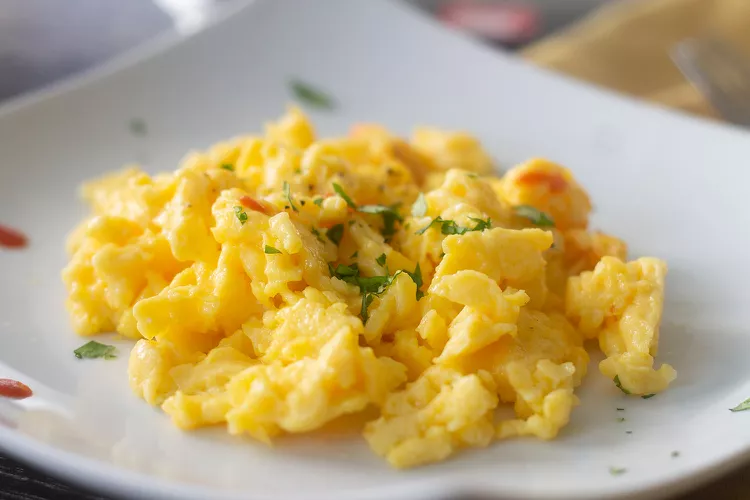

Fluffy Scrambled Eggs

Description
Here are the only ingredients you need, and the chef-approved method for how to make scrambled eggs worthy of any
morning. And, no... you don't add milk! Garnish with creme fraiche or sour cream, hot sauce, and chopped herbs.
Ingredients
- 4 large eggs
- 1 pinch salt
- 4 teaspoons butter
Directions
- Whisk eggs with salt until completely combined and very foamy.
- Melt butter in a skillet over low heat until bubbling. Add whisked eggs; cook, stirring frequently for even,
moist curds, until thickened and creamy, but still shiny, 2 to 3 minutes.
- Remove scrambled eggs from the pan before they begin to look dry, as they will continue to thicken off the
heat.